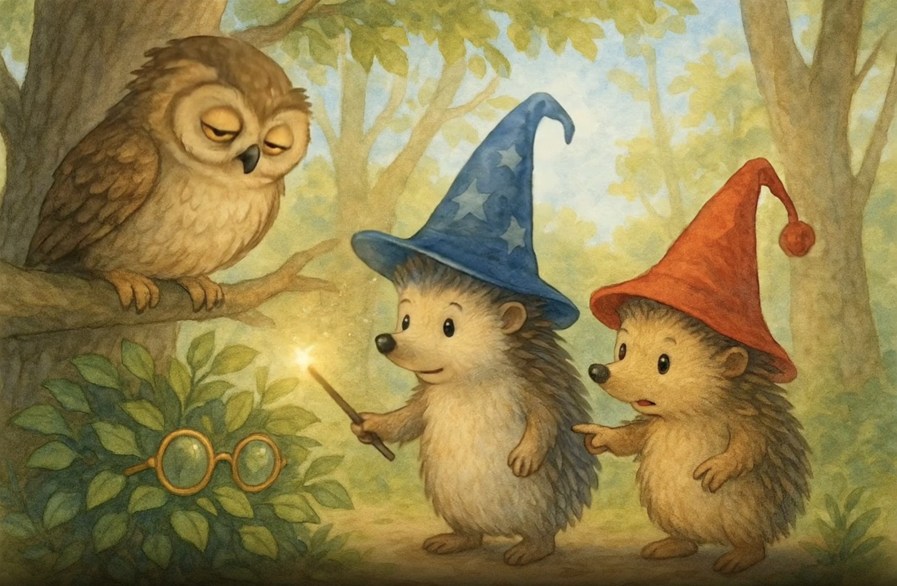
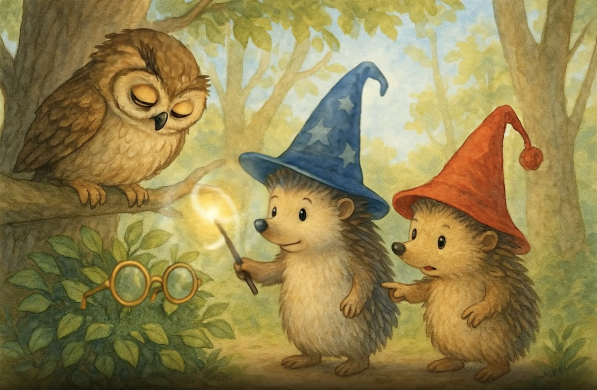
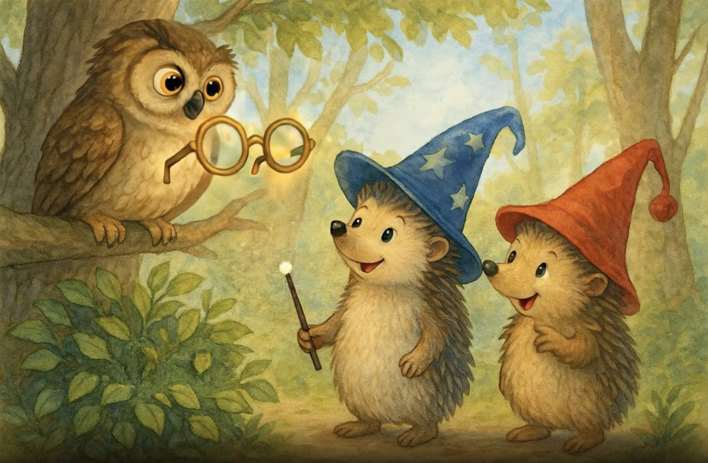

Las Aventuras de Mr. Pinpin y Mr. PomPom - La Búsqueda de los Anteojos del Búho - Página 1

Era una hermosa mañana en el Bosque Encantado cuando los hermanos erizo, Mr. Pinpin con su sombrero azul de estrellas y su varita mágica, y Mr. PomPom con su alegre gorro rojo, paseaban entre los árboles dorados. De repente, escucharon un suspiro triste. "¿Quién anda ahí?", preguntó Mr. PomPom. Desde su rama, el Búho Sabio los miraba con ojos entrecerrados. "Oh, pequeños amigos," dijo el búho, "he perdido mis anteojos y sin ellos no puedo leer mis libros de hechizos."

"¡No te preocupes, Señor Búho! ¡Nosotros te ayudaremos!" exclamó Mr. Pinpin con determinación, levantando su varita mágica que brillaba suavemente en la luz de la mañana. Mr. PomPom asintió con entusiasmo. "Sí, somos muy buenos encontrando cosas perdidas. Una vez encontré la bellota favorita de mi prima en todo el bosque." El búho parpadeó esperanzado mientras los dos hermanos comenzaban a buscar entre las hojas doradas que cubrían el suelo del bosque.

"Recuerdo que estaba leyendo justo aquí cuando sentí que se me resbalaban," dijo el Búho Sabio, señalando con su ala hacia un montón de hojas cerca de las raíces del gran roble. "Pero mis ojos ya no son lo que eran sin mis anteojos." Mr. Pinpin se acercó al lugar indicado, su varita mágica en mano. "Hmm, déjame pensar... ¿Qué hechizo sería bueno para encontrar objetos perdidos?" murmuró, mientras Mr. PomPom ya estaba escarbando entre las hojas con sus pequeñas patitas.

"¡Ya sé! ¡Usaré el hechizo de 'Revelación de lo Oculto'!" anunció Mr. Pinpin con confianza. Agitó su varita en el aire dibujando una estrella brillante y pronunció: "¡Perdidus Encontradus Volarus!" De repente, un destello dorado iluminó el claro del bosque, y para asombro de todos, los anteojos del búho aparecieron flotando mágicamente en el aire, brillando con una luz suave y cálida. "¡Funcionó!" gritó Mr. PomPom dando saltitos de alegría.

El Búho Sabio abrió mucho los ojos, maravillado por la visión de sus queridos anteojos flotando en el aire como una pequeña estrella dorada. "¡Oh, mis preciosos anteojos! ¡Los extrañaba tanto!" exclamó con emoción. "Sin ellos, no podía leer mis libros de pociones ni mis mapas del cielo estrellado." Mr. Pinpin mantuvo su varita en alto, concentrado en mantener el hechizo estable. "Tranquilo, Señor Búho, los guiaremos hasta usted," dijo con una sonrisa amable.

"Vamos, anteojos, vayan con su dueño," susurró Mr. Pinpin mientras movía su varita en círculos suaves. Los anteojos comenzaron a flotar lentamente hacia el búho, danzando en el aire matutino como una mariposa dorada. Mr. PomPom, no queriendo quedarse atrás, se puso de puntillas y sopló suavemente hacia los anteojos. "¡Yo también estoy ayudando!" dijo orgulloso. "Mi aliento mágico de erizo los empuja en la dirección correcta." El búho observaba con ansiedad y gratitud cómo sus preciados anteojos se acercaban cada vez más.

Los anteojos dorados se acercaban graciosamente al búho, quien los miraba sin parpadear, como si temiera que desaparecieran si apartaba la vista. "Ya casi están aquí," dijo en voz baja, con el corazón lleno de esperanza. Mr. Pinpin mantuvo su concentración, con pequeñas gotitas de sudor en su frente por el esfuerzo mágico. "Solo un poco más," murmuró. Mr. PomPom aplaudía suavemente para animar a su hermano. "Tú puedes, Pinpin. Eres el mejor mago erizo del bosque."

Con un movimiento elegante, el Búho Sabio extendió sus amplias alas marrones, creando una suave brisa que hizo danzar las hojas alrededor. "¡Ya casi los tengo!" exclamó emocionado, estirando su ala derecha hacia los anteojos brillantes. La luz del sol matutino se filtraba entre las ramas, creando un momento mágico mientras los anteojos se acercaban lentamente a su destino. Mr. Pinpin y Mr. PomPom contenían la respiración, observando con anticipación el momento crucial del reencuentro.

¡Y sucedió! Con la delicadeza de una pluma cayendo, los anteojos dorados se posaron perfectamente sobre el pico del Búho Sabio. "¡Lo logramos!" gritaron Mr. Pinpin y Mr. PomPom al unísono, saltando de alegría. El búho permaneció muy quieto por un momento, como si no pudiera creer que sus queridos anteojos habían regresado. Una lágrima de felicidad brilló en su ojo derecho. "Oh, mis queridos amigos," susurró emocionado, "no sé cómo agradecerles."